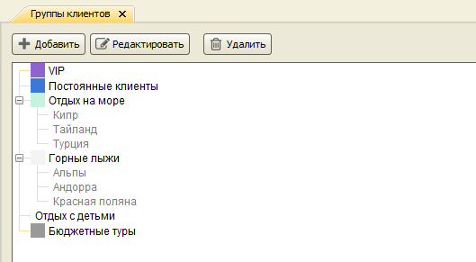
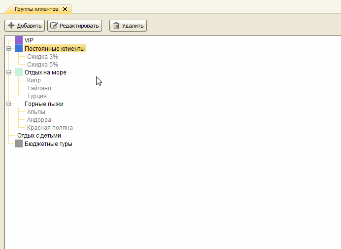
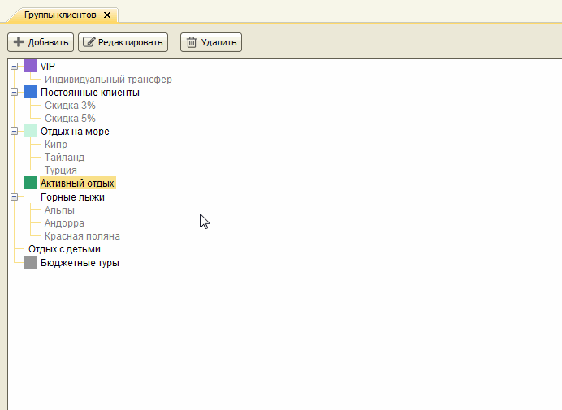
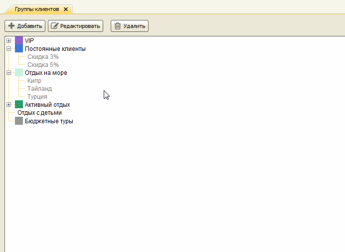
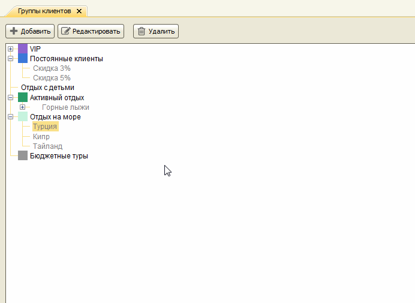
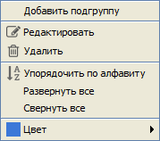
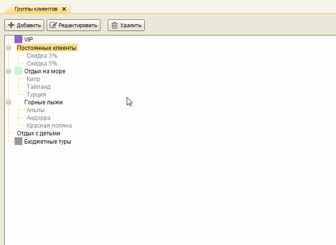

Группы клиентов
Главное меню → Справочники → Группы клиентов
Справочник "Группы клиентов" предназначен для классификации всех клиентов турагентства по определенным признакам. Например, клиентов, регулярно заказывающих туры, можно объединить в группу "Постоянные клиенты", клиентов, путешествующих с детьми, - в группу "С детьми" и т.д. При работе с базой клиентов можно отбирать клиентов, входящих в определенные группы, просматривать статистику по группам.

Каждая группа может иметь одну или несколько подгрупп, которые, в свою очередь, могут тоже иметь подгруппы. Это позволяет организовывать группы в виде древовидной структуры.
Добавление, редактирование и удаление групп доступно только пользователям, имеющим роли Администратор, Директор или Главный менеджер.
Создание подгруппы
Для добавления подгруппы нужно сначала выбрать, к какой группе создаваемая подгруппа будет принадлежать, затем нажать кнопку "Добавить".

Одна группа может быть помещена внутрь другой перетаскиванием мышью.

Упорядочивание
Подгруппы могут быть упорядочены перетаскиванием мышью.

Чтобы вернуть упорядочение по алфавиту, используемое по умолчанию, нужно выбрать пункт "Упорядочить по алфавиту" в контекстном меню, вызываемом нажатием правой кнопки мыши.

Функции контекстного меню
- Добавить
- Редактировать
- Удалить
- Упорядочить по алфавиту
- Свернуть все
- Развернуть все
- Изменить цвета фона и текста
Первые три функции также дублируются кнопками в верхней панели.

Выбор цвета
В карточке клиента выбранные группы могут выводится разными цветами фона и текста. Чтобы определить цвета для группы, нужно выделить группу, вызвать контекстное меню правой кнопкой мыши, выбрать пункт меню Цвет. В открывшемся окне палитры можно выбрать цвета для фона и для текста.

Остались вопросы? Напишите нам на e-mail